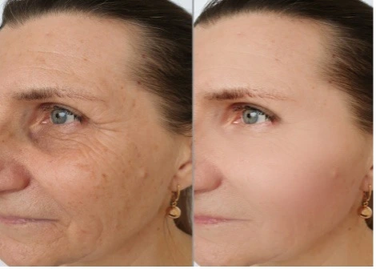
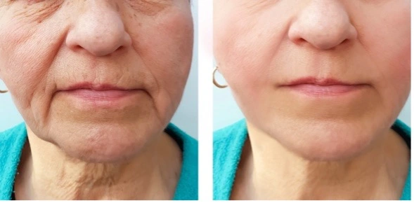

El secreto de Jennifer López para eliminar las arrugas y las marcas de la edad de forma natural
Ritual Matutino es el “secreto” de una piel sedosa en 28 días
Usado por celebridades como Jennifer López, Shakira, Madonna y miles de mujeres más, este tratamiento coreano ha demostrado ser altamente efectivo para eliminar las arrugas, la flacidez de la piel y cualquier marca de la edad.
Comprueba por ti mismo los increíbles resultados.
¿Qué pasaría si la gente normal hiciera la misma rutina casera que hacen las celebridades que no parecen envejecer? La redacción habló con Jennifer López, actriz y cantante y encargada de dar a conocer este tratamiento, para entender cómo tú también puedes repetir el mismo tratamiento sin salir de casa.
Entrevista realizada el 29/01/2023REPORTERA: Jennifer es un placer hablar contigo, ¿podemos empezar por saber cuál es tu edad actual?
JENNIFER LOPEZ: El gusto es todo mío, hoy cumplo 53 años, pero confieso que todavía me siento como una mujer de 30.
REPORTERA: Bueno, mirándote, podría decir fácilmente que no estás ni cerca de los 35, pero cuéntanos, ¿cuál es el secreto para mantener una piel tan perfecta?
JENNIFER LOPEZ: Para ser honesta, lo único que he hecho durante años es seguir el tratamiento casero del Doctor Oscar Martínez, que es mi dermatólogo personal.
REPORTERA: Mira, no quiero ofenderla de ninguna manera, pero las celebridades de Hollywood son famosas por usar botox y cirugía plástica en exceso, ¿este también es su caso?
JENNIFER LOPEZ: Para nada, el doctor Oscar me lo prohibió, hace unos años cuando empezaron a salir las arrugas, consideré ponerme botox, pero cuando mi doctor lo supo me lo prohibió, y luego me dio el Protocolo Rejuvenecedor Coreano, que es lo que muchas mujeres y yo usamos todos los días.
REPORTERA: ¿Nos puede hablar más sobre este tratamiento?
JENNIFER LOPEZ: Claro, se trata de una rutina casera que hago en la comodidad de mi casa. Sin medicamentos y sin cirugías es algo muy sencillo de hacer.
REPORTERA: ¿Cree que cualquier mujer que repita este tratamiento podrá deshacerse de las arrugas y las manchas de la edad?
JENNIFER LOPEZ: Mira, no soy la única que hace este tratamiento, y antes de comenzar vi los resultados que tenían algunas mujeres tuvieron incluso con 60 y hasta 70 años, la transformación es impresionante, entonces sí. Cualquier mujer, aunque ya tenga arrugas, obtendrá resultados increíbles con este tratamiento.
REPORTERA: Muchas gracias por tus comentarios, Jennifer, fue un placer volver a hablar contigo.
JENNIFER LOPEZ: Muchas gracias, cuenten conmigo para otras entrevistas.
RESULTADOS DE JENNIFER LOPEZ TRAS 45 DÍAS DE APLICAR LA RUTINA REJUVENECEDORA.EXCLUSIVO PARA LECTORAS DE BCC
Con la repercusión generada tras la entrevista de Jennifer Lopez, la demanda del tratamiento antiarrugas y antiflacidez conocido como Protocolo Rejuvenecedor Coreano creció rápidamente.
Y con eso, muchas empresas falsas están aprovechando esta repercusión para vender el paso a paso de este tratamiento de forma completamente falsa y generando frustración a miles de mujeres.
Considerando este caso, el equipo editorial decidió buscar al Doctor Oscar Martínez, oficial, para preguntarle cómo nuestras lectoras pueden tener acceso al tratamiento original, y obtuvimos una oportunidad increíble para ti.
El tratamiento del Doctor Oscar ya ha ayudado a más de 45 mil mujeres en todo el mundo, y este mismo tratamiento te puede ayudar hoy, te voy explicar cómo funciona el tratamiento.
Según el Doctor Oscar Martínez, cada vez que aparece una arruga es señal de que algo anda mal con las células que absorben el colágeno, y el protocolo rejuvenecedor actúa sobre estas células, permitiendo que el colágeno vuelva a absorberse con normalidad como ocurría años atrás.
Por ello, no importa cuánto colágeno tomes o qué dieta sigas. Si no preparas tu cuerpo para absorber este colágeno, será desechado a través de la orina.
Echa un vistazo a algunos pacientes que el Doctor Oscar envió a nuestra redacción, mostrando los resultados del Protocolo Rejuvenecedor.
 ROSA GONZALES - 53 AÑOS - 9 AÑOS REJUVENECIDA EN 7 SEMANAS DE TRATAMIENTO. JUANA BERTINELLI - 49 AÑOS - REJUVENECIDA 5 AÑOS Y ELIMINADO MELASMA EN 9 SEMANAS DE TRATAMIENTO.  CLEMENTINA NUNES - 55 AÑOS, REJUVENECIDA 10 AÑOS EN 7 SEMANAS DE TRATAMIENTO.LA BUENA NOTICIA ES:
El Doctor Oscar es el responsable de crear otros tratamientos además del Protocolo Rejuvenecedor, y hoy te enviará de regalo el acceso a estos 3 increíbles tratamientos.
1º Una Guía para Adelgazar: Si sientes sobrepeso o crees que necesitas bajar la panza, el equipo médico ha elaborado una Guía que es capaz de eliminar 5 kg de grasa cada 30 días de forma sana y natural.
CON VALOR DE US$38.00 POR US$0.00
2º Proceso Acelerador Capilar: Muchas mujeres tienen dificultad para dejar crecer su cabello o sufren pérdida de cabello. Hay un proceso que hará que tu cabello sea más saludable y fuerte, y también tendrás acceso completo a este tratamiento.
CON VALOR DE US$38.00 POR US$0.00
3° Tratamiento Cero Estrías: Y para complementar el tratamiento más solicitado por las mujeres, podrás eliminar el 86% de todas las estrías de tu cuerpo en los próximos 45 días, ¡esto te ayudará a sentirte más hermosa de lo que ya eres!
CON VALOR DE US$58.00 POR US$0.00
TRATAMIENTO LIBERADO (OBTENLO AHORA)
Estamos hablando de más de $100.00 en regalos, y para asegurarlo todo lo que tienes que hacer es reservar tu acceso al Protocolo Rejuvenecedor Coreano.
Recuerda que esta es una oferta exclusiva para nuestras lectoras de CNN, ahora te estarás preguntando ¿cuánto cuesta este tratamiento que usan las celebridades para eliminar las marcas de la edad y la flacidez en el cuerpo? ¿No es así?
Por lo general, este producto se distribuye por $79.00…
Pero después de negociar con el equipo médico del Doctor Oscar, ¡tenemos dos cosas increíbles para ti, querida lectora!
VENTAJAS DE LECTORA DE CNN
¡GARANTÍA DE RESULTADO O DEVOLUCIÓN DE SU INVERSIÓN!
Esto significa que después de completar tu pedido, puedes probar el tratamiento rejuvenecedor y todas las ventajas durante 30 días. Y si por alguna razón no estás satisfecha, solo envía un correo electrónico a nuestro equipo de producción y te devolveremos cada centavo invertido.
VALOR PROMOCIONAL EXCLUSIVO.
¡Solo tú, nuestra lectora, tendrás acceso al Protocolo Rejuvenecedor Coreano y 3 obsequios increíbles por solo $ 37.00! Estamos hablando de más de $40.00 de descuento para que por fin tengas acceso a un tratamiento capaz de acabar con las arrugas y las marcas de la edad.
Recibe el mismo trato que Jennifer Lopes, Shakira y otras celebridades, sin necesidad de salir de casa. Elimina las arrugas, la piel flácida y las marcas de la edad en 28 días con el Protocolo Rejuvenecedor Coreano.
QUIERO ACCEDER AL TRATAMIENTO Y LOS 3 REGALOS
Y si aún tiene dudas sobre el tratamiento, invitamos a la dermatóloga más solicitada del mundo, Shereene Idriss, para que responda algunas preguntas sobre este tratamiento.
Redacción: ¿Cuánto tiempo tardan las mujeres en ver el cambio al verse en el espejo?
Doctor Idriss: En 4 días ya se notará el cambio, después de investigar y entender mejor el tratamiento del Doctor Oscar, me quedó claro que ningún otro tratamiento da resultados tan rápido y sin efectos secundarios negativos.
Redacción: ¿Hay alguna contraindicación? ¿Alguien que no pueda hacer el tratamiento?
Dra. Idriss: No. Por el hecho ser un tratamiento casero y natural, diría que es imposible que alguien salga perjudicado al realizarlo. Incluso diría lo contrario, aunque no tengas arrugas, aplicar el Protocolo Rejuvenecedor Coreano por la mañana evitará que aparezcan.
Redacción: ¿Los pacientes con diabetes o presión arterial alta también pueden usar el tratamiento?
Doctora Idriss: Sí, todas las mujeres pueden sentirse bellas y jóvenes, ¿no? Yo misma lo estoy recomendando a mis pacientes, este tratamiento es algo innovador y sorprendente. Y por supuesto, lo mejor es que cualquiera puede hacerlo sin tener que salir de casa